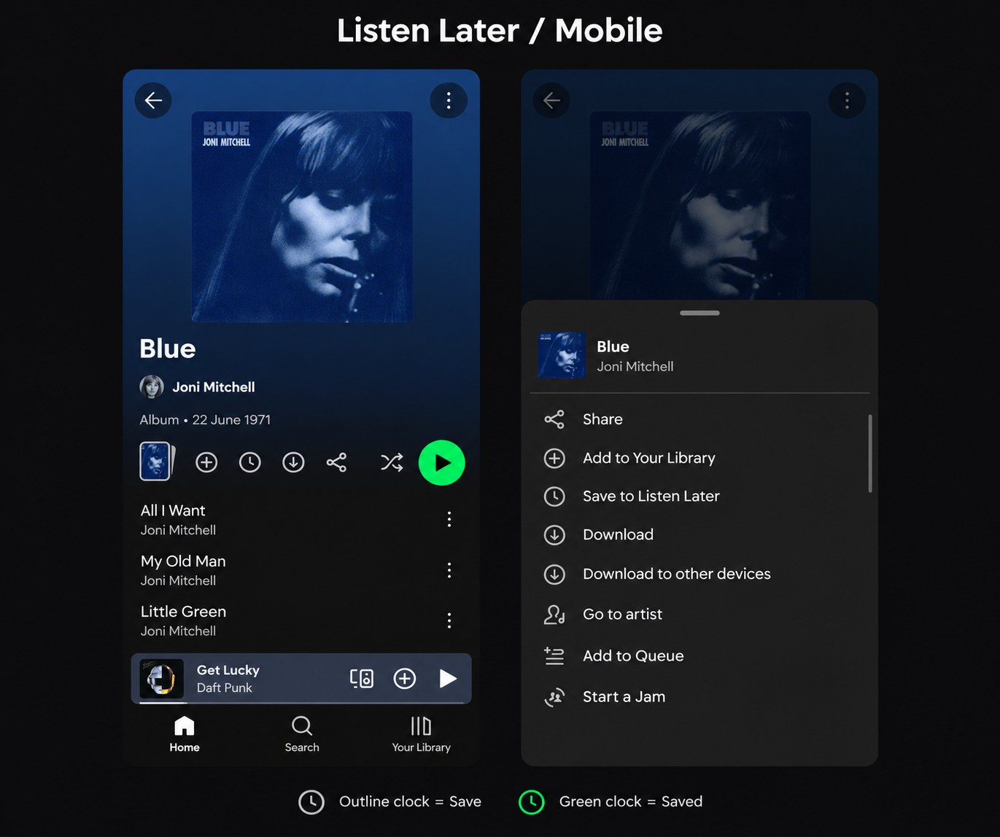
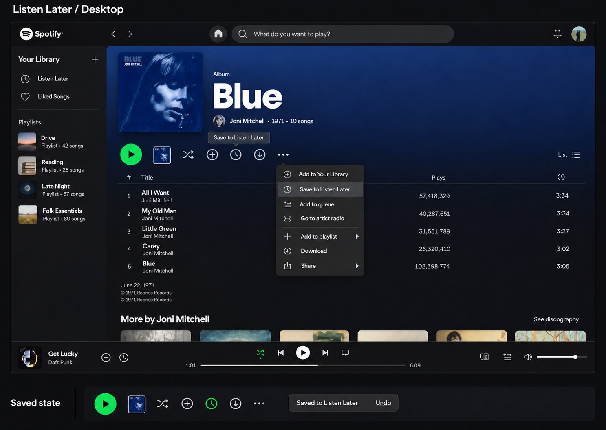
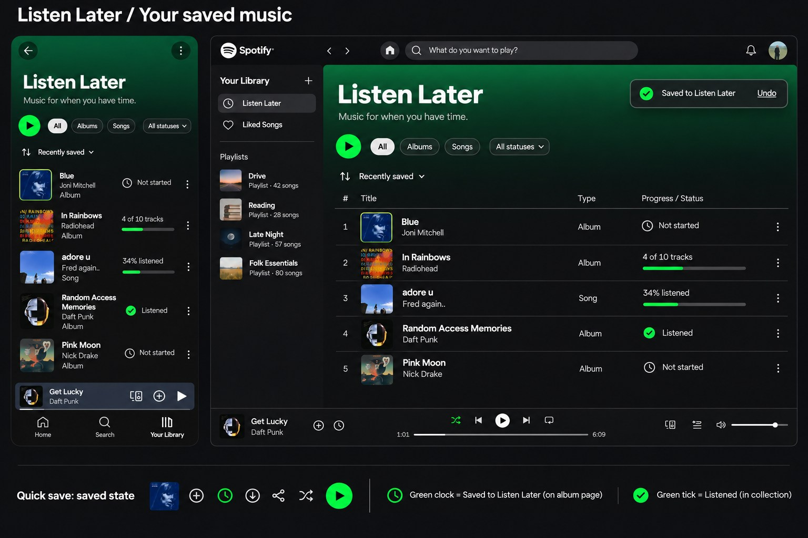

Discover → Tap the clock → Saved
A clock beside the existing Add to Your Library control saves the album in one tap. The clock turns green and a confirmation offers Undo. Tapping the saved clock removes the item.
PRODUCT DESIGN / MOBILE + WEB / 2026
A personal shelf for the albums and songs you want to give a proper listen—whether they arrived today or have been waiting for years.

MY CONTRIBUTIONConcept, UX flows, UI & motion
DELIVERABLEMobile + desktop UI and 4K walkthrough
STATUSIndependent feature concept
01 / THE PROBLEM
A new album appears while you are working. A friend recommends an older record during your commute. You want to come back when you can give it your attention.
The design opportunity was to make that intention explicit: a place for music you plan to hear, with enough context to remember what is still waiting.
This problem framing is a design hypothesis, not a finding from interviews or a measured claim about Spotify listeners.
02 / THE IDEA
Listen Later gives released songs and whole albums a home in Your Library, beside Liked Songs. It records an intention to listen without treating the music as a favourite or changing what plays next.
The collection pairs a simple list with lightweight progress. A gray clock marks music not started, horizontal bars show partial listening, and a green tick identifies listened items.
03 / TWO ENTRY POINTS, ONE COLLECTION
A clock beside the existing Add to Your Library control saves the album in one tap. The clock turns green and a confirmation offers Undo. Tapping the saved clock removes the item.
Save to Listen Later also appears after Add to Your Library in the existing menu. Return through Your Library, open Listen Later, and choose what deserves your next listening session.
04 / THE WALKTHROUGH
The walkthrough follows the menu route and shows the new quick-save control on the album page. The interface boards below show both quick-save states.
05 / THE DESIGN DECISIONS
The clock sits beside the library plus. Artwork preview, download, share, shuffle and playback remain available on mobile; the desktop toolbar and its existing menu actions are retained.
A green clock means saved for later. A green tick means listened. Labels accompany collection status so color alone does not carry the meaning.
An album remains one item in the list. Its progress can show tracks listened, while a song uses playback progress. Saving does not flatten a release into a playlist of tracks.
The proposed behavior keeps items until removed, prevents duplicate saves, and supports manually marking an item as listened or unlistened. A short preview should not count as a completed listen.
06 / THE INTERFACE
The first screens simplified too much of the album page. Comparing them with mobile and desktop references led to fuller controls, a native mobile bottom sheet, an anchored desktop menu, and the quick-save clock. These are freshly created concept mockups; the reference screenshots are not used as finished screens.



07 / OUTCOME & NEXT STEPS
The result is a connected mobile and desktop concept: two saving entry points, a library destination, progress and status indicators, and a 40-second feature walkthrough.
Next, I would test whether people understand the clock without prompting, distinguish saving for later from adding to their library, and recognise the difference between saved and listened states. Completion thresholds and album progress rules would also need testing before implementation.
This work consists of concept mockups and an animated walkthrough. It has not been validated through user research or usability testing and is not a working Spotify integration. Listening progress, cross-device sync and playback behavior are proposed features; no outcome metrics are claimed.
08 / EXPLORE THE WORK
Deliverables are raster UI mockups, design notes and a video. An interactive prototype, editable Figma file and production source are not included.